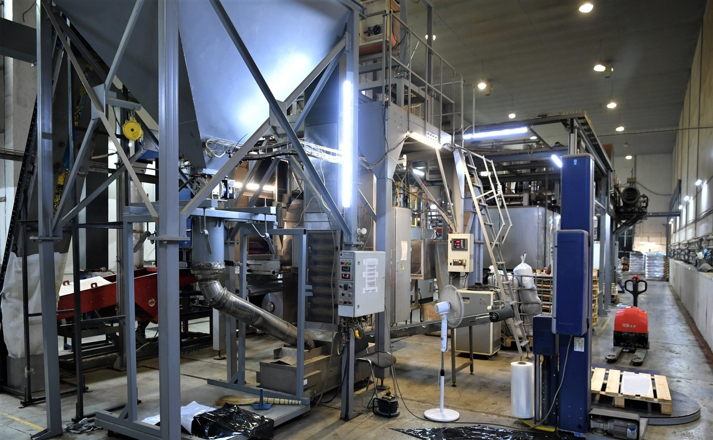

Карельский Рыбный Завод
Карельские Рыбные Заводы (КРЗ) — частная группа компаний и одноимённый бренд готовой рыбной продукции. Компания основана в 2012 году. Акцент сделан на выращивании форели в акваториях Северо-Западного региона России. Производственные мощности КРЗ размещены в одних из самых экологически чистых районах России – заливах Онежского озера и водоёмах Карелии.